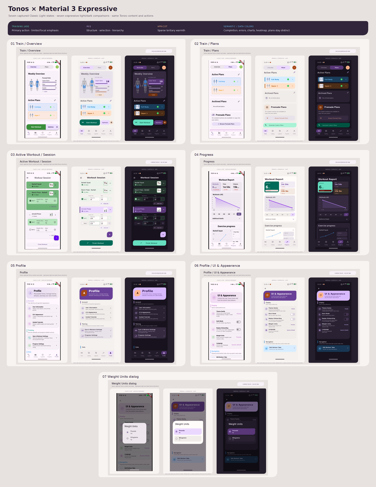
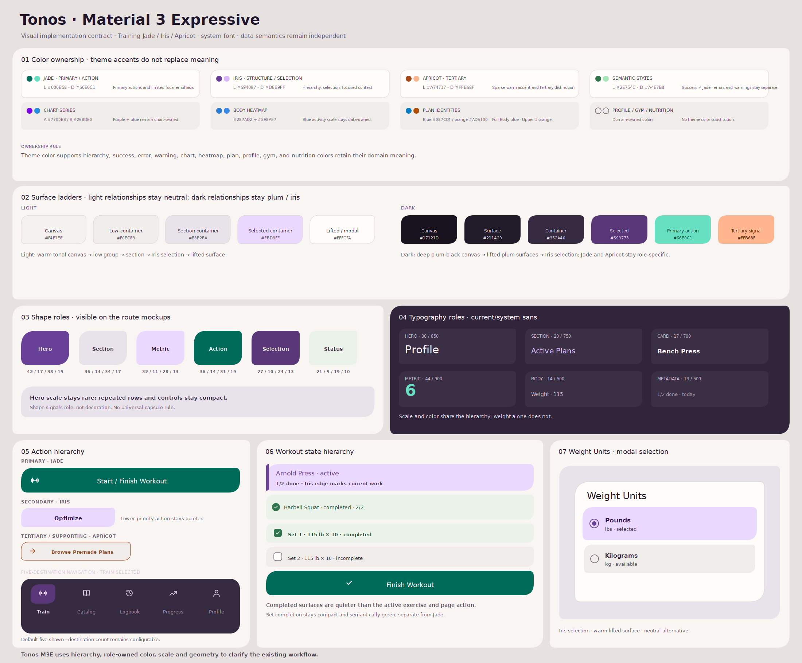
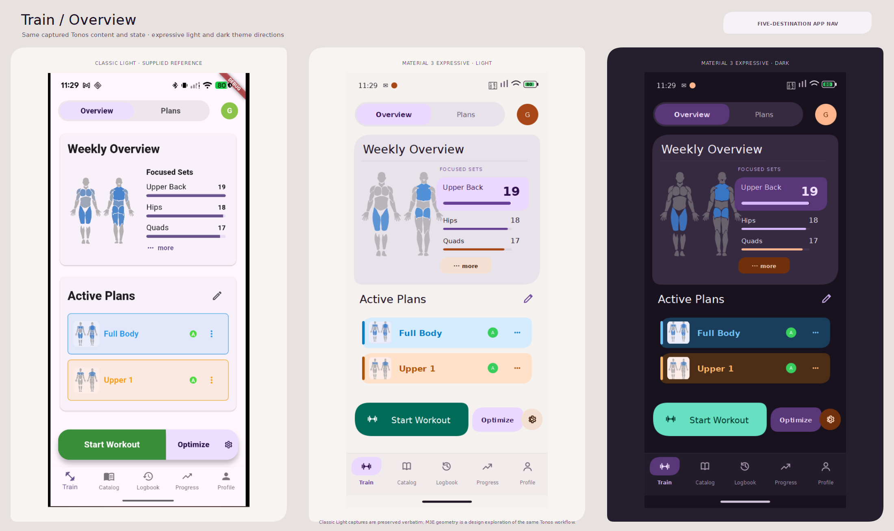
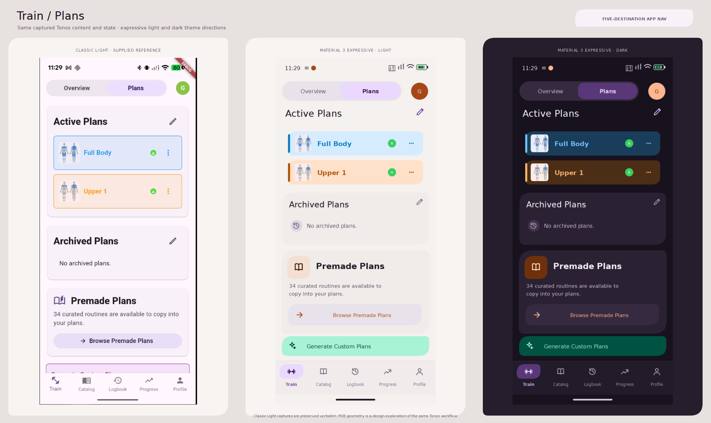
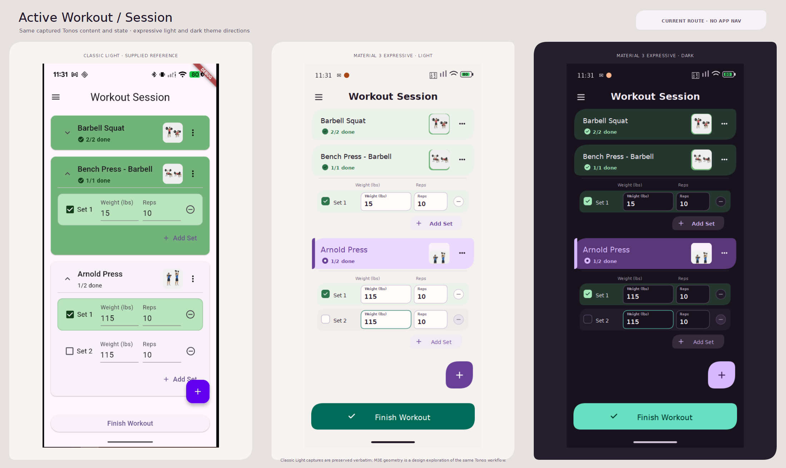
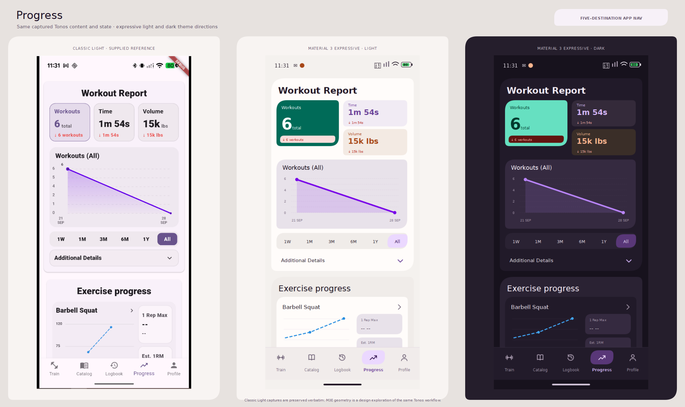
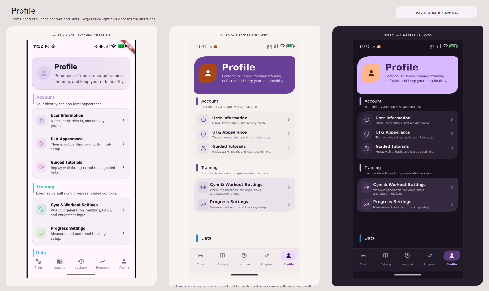
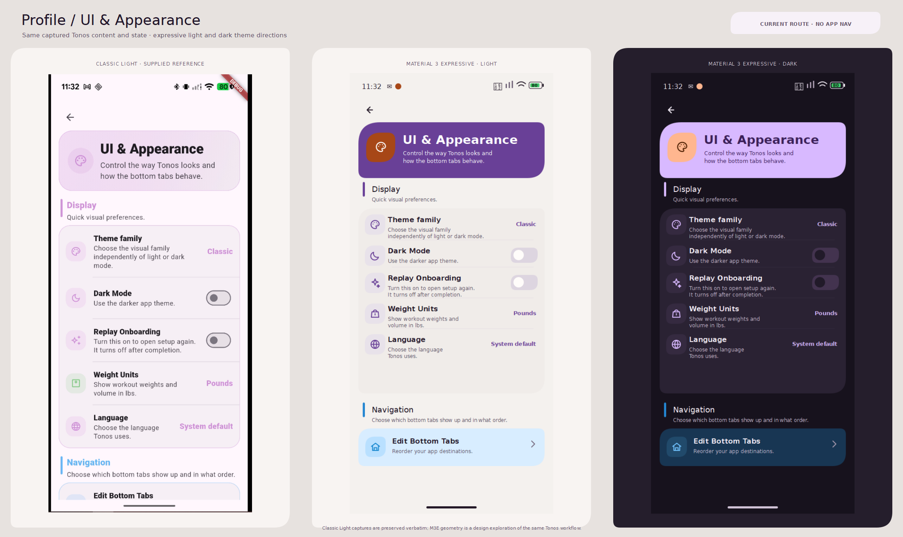
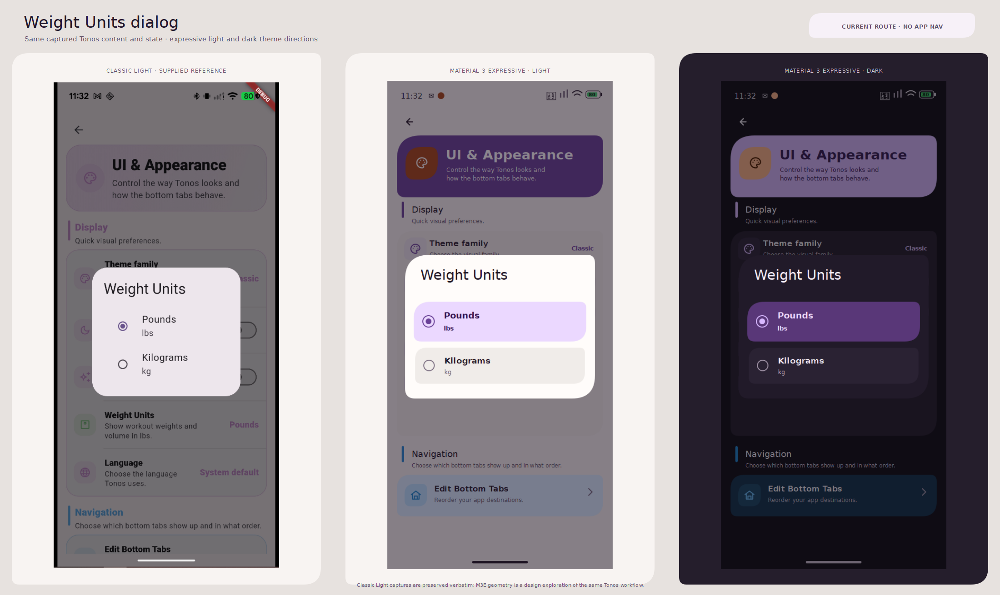

ColorScheme roles; the light/dark surface ladder; system-font hierarchy; ordinary button, tab, navigation bar, field, switch, checkbox, radio, card, and dialog themes. The screen treatment relies mainly on these built-in capabilities.
Theme family proposal · visual direction
Tonos, expressed through Material 3.
One bold, usable direction: training jade, iris, and apricot; purposeful scale and shape; and tonal groupings that make actions and workout states easier to scan. The supplied screenshots define the content and state. M3 Expressive defines the visual language.
One palette · seven matched states
Training Jade / Iris / Apricot
Jade owns primary actions; Iris owns structure and selection; Apricot is a sparse warm accent. Success, errors, warnings, chart series, body heatmap values, plan identities, and category colors keep their own meaning.
PRIMARY · LIGHT#006B58
SECONDARY · LIGHT#694097
TERTIARY · LIGHT#A74717
DARK CANVAS#17121D base
Light uses a warm neutral canvas with distinct container levels. Dark keeps the plum-black canvas, violet structural surfaces, mint Jade action, and Apricot contrast. Completion and report data use separate semantic colors.
System font stackFocal metric scaleAsymmetric role-based shapesFive-destination default shown
Material 3 Expressive, for Tonos
Google describes its creative drivers as color, shape, size, motion, and containment, and frames expression as useful hierarchy that respects familiar interaction patterns. Tonos keeps its workout workflow and data semantics while using those drivers more assertively.
Hierarchy that points to actionScale rhythm in dense contentContrasting—not random—colorGeometry tied to component role
The supplied Classic Light screenshots are embedded verbatim at the left of every comparison. Example states and visible values carry across both M3E variants.

M3E design-system board
The visual implementation contract: owned color roles and light/dark surface ladders; six shape roles; six typography roles; three action levels; workout states; five-destination navigation; and Weight Units selection.

Screen comparisons
Each board shows the supplied Classic Light capture, then M3E Light and M3E Dark with matching content and state. Session remains a focused logger without app bottom navigation; other boards use the five-destination configuration in the screenshots.
01
Train / Overview
Captured state: Train and selected Overview. Preserved content: Full Body, Upper 1; Focused Sets: Upper Back 19, Hips 18, Quads 17; Start Workout, Optimize, settings.

Open supplied Classic Light screenshot · M3E Light render · M3E Dark render
02
Train / Plans
Captured state: Train and selected Plans. Preserved content: Full Body and Upper 1; empty Archived Plans; 34 Premade Plans; Browse and visible Generate Custom Plans action.

Open supplied Classic Light screenshot · M3E Light render · M3E Dark render
03
Active Workout / Session
Captured state: Workout Session. Preserved content: Barbell Squat 2/2 complete and collapsed; Bench Press - Barbell 1/1 complete and open; Arnold Press 1/2 complete and open.

Open supplied Classic Light screenshot · M3E Light render · M3E Dark render
04
Progress
Captured state: Progress selected. Preserved content: Workout Report 6, 1m 54s, 15k lbs with the displayed negative deltas; Sep 21–28 report; All selected; Barbell Squat progress starts below.

Open supplied Classic Light screenshot · M3E Light render · M3E Dark render
05
Profile
Captured state: Profile selected. Preserved content: Profile hero; Account and Training groups; Data heading and the next settings card beginning at the bottom.

Open supplied Classic Light screenshot · M3E Light render · M3E Dark render
06
Profile / UI & Appearance
Captured state: UI & Appearance. Preserved content: Classic family value; Dark Mode off; Replay Onboarding off; Pounds; System default; Edit Bottom Tabs.

Open supplied Classic Light screenshot · M3E Light render · M3E Dark render
07
Weight Units dialog
Captured state: UI & Appearance with Weight Units open. Preserved content: Pounds selected; Kilograms available; current Appearance screen remains visible under the scrim.

Open supplied Classic Light screenshot · M3E Light render · M3E Dark render
Implementation feasibility · after the visual target
These categories describe the static visual treatments, not a Step 16.2 implementation decision.
m3_expressive 1.0.0 declares Flutter 3.10 / Dart 3.0 minimums, so its small set of loading, shape, and list interactions fits the current SDK. It is a third-party candidate for a narrow later review. material_3_expressive 1.1.3 has a broader widget set but requires Flutter 3.47 / Dart 3.13 and migrates Material imports to material_ui; it is not compatible with this workspace today.
Use a few static role shapes and state adapters where Flutter’s standard theme slots cannot express the desired corners or workout completion tint. Route layouts, selection geometry, and the dialog remain ordinary Material-compatible surfaces.
Spring-driven press feedback, state-to-state shape morphing, advanced animated navigation, and other M3E-only motion stay outside this visual target. The static proposal does not depend on them.
Workspace SDK verified: Flutter 3.29.3 / Dart 3.7.2. No package was added, no SDK changed, and Step 16.2 did not begin.
Design and implementation references
Google Design · M3 Expressive research
Google Design · scale, space, shape, color, type
Material Design · current M3 Expressive overview
Android Developers · roles, surfaces, contrast
Android Developers · navigation patterns
Flutter · Material 3 foundation
pub.dev · compatible M3E component candidate
pub.dev · broader M3E component set and SDK requirements
Supplied Classic Light reference set